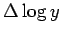

Inhalt Index DeskTop Bronstein

 Funktionen und ihre Darstellung Aufstellung empirischer Kurven Gebräuchlichste empirische Formeln
Funktionen und ihre Darstellung Aufstellung empirischer Kurven Gebräuchlichste empirische Formeln


Typische Kurvenverläufe dieser Funktion zeigt die folgende Abbildung.
Die Diskussion der Funktion erfolgte im Abschnitt Produkt aus Potenz- und Exponentialfunktion (s. Gleichung (2.62)).
Wenn die empirischen x-Werte eine arithmetische Folge mit der Differenz h bilden, dann wird gemäß
| (2.255b) |
rektifiziert. Dabei wird mit  bzw.  die Differenz zweier aufeinanderfolgender Werte von
die Differenz zweier aufeinanderfolgender Werte von  bzw.
bzw.  bezeichnet. Bilden jedoch die x-Werte eine geometrische Folge mit dem Quotienten q, dann erfolgt die Rektifizierung gemäß
bezeichnet. Bilden jedoch die x-Werte eine geometrische Folge mit dem Quotienten q, dann erfolgt die Rektifizierung gemäß
| (2.255c) |
Nachdem b und c bestimmt sind, wird die gegebene Gleichung logarithmiert, um ebenso zu bestimmen wie in (2.248d). Wenn die gegebenen x-Werte keine geometrische Folge bilden, sich aber jeweils zwei x-Werte so auswählen lassen, daß ihr Quotient den konstanten Wert q ergibt, dann gilt für die Rektifizierung die gleiche Formel wie im Falle einer geometrischen Folge der x-Werte, wenn gesetzt wird. Dabei ist mit die Differenz zweier Werte von bezeichnet, deren zugehörige x-Werte den konstanten Quotienten q ergeben (s. Beispiel).